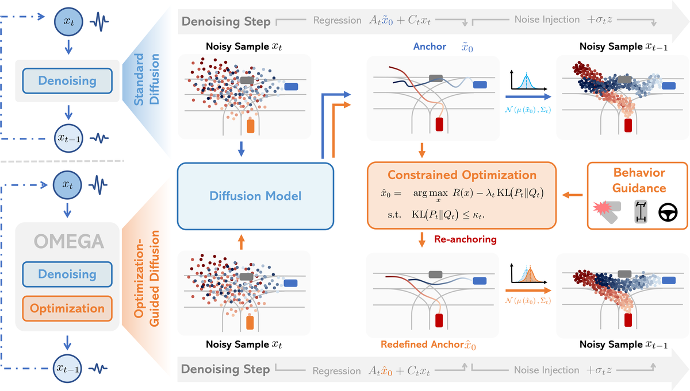
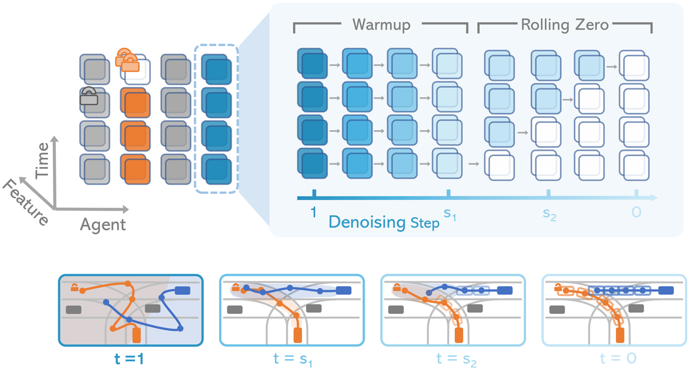
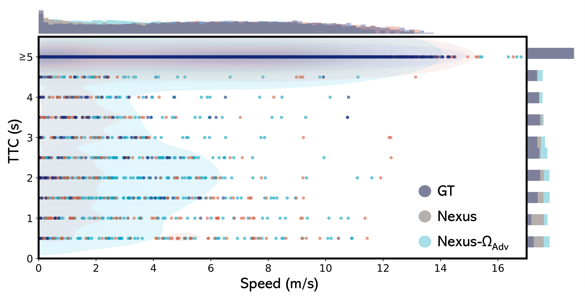

Optimization-Guided
简单摘要
我们提出了 OMEGA，这是一种优化引导、免训练的框架，可在场景生成模型的基于扩散的采样过程中增强结构一致性和交互意识。在此框架的基础上，我们将自我与攻击者的交互制定为分配空间中的博弈论优化，近似纳什均衡以生成现实的、安全关键的对抗场景。

为了满足这些要求，研究人员转向数据驱动的场景生成，这使得模型能够直接从大规模驾驶数据集中学习复杂的代理行为。先验扩散方法通过强化学习分类器、手动设计的行为塑造目标或预先指定的目标条件引入指导。
核心创新
第一，真实且多样化的多智能体驾驶场景对于评估自动驾驶汽车至关重要，但对于这项任务至关重要的安全关键事件在驾驶数据集中很少见且代表性不足。
第二，数据驱动的场景生成通过从现有驾驶日志中合成复杂的交通行为，提供了一种低成本的替代方案。
第三，我们提出了 OMEGA，这是一种优化引导、免训练的框架，可在场景生成模型的基于扩散的采样过程中增强结构一致性和交互意识。
技术细节
从纯噪声开始，逆过程从噪声中重建数据，并建模为高斯过渡。给定修复掩模及其相应的上下文值，扩散模型学习重建以局部时空和全局场景信息为条件的未观察到的元素。


3.1 初步的
条件的解析边际分布为。从纯噪声开始，逆过程从噪声中重建数据，并建模为高斯过渡。给定修复掩模及其相应的上下文值，扩散模型学习重建以局部时空和全局场景信息为条件的未观察到的元素。
3.2 优化引导的约束扩散
由于 、 、 和 在每个步骤中都是固定的，因此 的条件分布完全由模型估计的干净样本 表征。这个观点强调，每个反向扩散步骤构成了一个锚定在预测的干净样本上的条件采样过程。通过求解一个约束最大化问题得到优化的anchor。
3.3 两阶段噪声调度
为了平衡多智能体场景生成中的全局一致性和局部响应性，我们引入了一种两阶段噪声调度方案，称为“Warmup”和“Rolling-Zero”。预热阶段 预热阶段在逐渐降低的噪声计划下对每个智能体的轨迹执行全序列去噪。在每一步中，一个框架都会根据之前清理的状态进行细化，从而实现框架级适应不断变化的代理间交互和环境线索。
3.4 敏感性增强的对抗生成
灵敏度增强迭代最佳响应 直接求解式（1）中的联合优化。表示攻击者之前的锚点和自我当前的优化响应。使用自我约束问题 () 的 Karush-Kuhn-Tucker (KKT) 最优性条件，关于攻击者决策的敏感性可以表示为。
$$ \begin{aligned} q(x_t \mid x_0) &= \mathcal{N}\big(\sqrt{\bar{\alpha}_t}\,x_0,\; (1-\bar{\alpha}_t)I\big), \\ x_t &= \sqrt{\bar{\alpha}_t}\,x_0 + \sqrt{1-\bar{\alpha}_t}\,\epsilon, \end{aligned} $$
这条式子给出了扩散过程的闭式写法：无需逐步递推，也能直接得到任意时间步的带噪状态。这样训练时可以随机采样时间步，提高学习效率。
$$ p_\theta(x_{t-1}\mid x_t) = \mathcal{N}\big(\mu_\theta(x_t, t),\, \Sigma_\theta(x_t, t)\big), $$
这条式子给出了反向扩散一步的条件分布：在当前噪声状态下，模型需要预测前一时刻样本大致落在哪个高斯分布里。它对应的是从噪声逐步回到数据的基本采样接口。
$$ x_{t-1} = \frac{1}{\sqrt{\alpha_t}} (x_t - \frac{1 - \alpha_t}{\sqrt{1 - \bar{\alpha}_t}}\, \epsilon_\theta(x_t, t)) + \sigma_t z, $$
这条式子把一次反向扩散更新拆成三部分：沿预测噪声方向做确定性修正，再加上当前时间步保留的随机噪声。它说明 OMEGA 的引导并不是重写整个扩散过程，而是插在标准去噪更新里调整轨迹。
$$ \tilde{x}_0 = \frac{x_t - \sqrt{1-\bar{\alpha}_t}\,\epsilon_\theta(x_t, t)}{\sqrt{\bar{\alpha}_t}}. $$
这条式子是在根据当前带噪样本和网络预测噪声，反推出对应的干净样本估计。后面的优化引导、KL 约束和奖励项，都是围绕这个“当前认为最像真实数据的锚点”展开。
$$ p_\theta(x_{t-1} \mid x_t) = \mathcal{N}\big(x_{t-1};\, A_t \tilde{x}_0 + C_t x_t,\, \sigma_t^2 I\big), $$
这条式子给出了反向扩散一步的条件分布：在当前噪声状态下，模型需要预测前一时刻样本大致落在哪个高斯分布里。它对应的是从噪声逐步回到数据的基本采样接口。
$$ x_{t-1} = \underbrace{A_t \tilde{x}_0}_{\text{regression term}} + \underbrace{C_t x_t}_{\text{inertia term}} + \underbrace{\sigma_t z}_{\text{noise term}}. $$
这条式子把一次采样更新显式拆成回归项、惯性项和噪声项三部分。这样的分解很关键，因为 OMEGA 后续正是围绕“该改哪一部分、改多少”来做优化引导。
$$ \begin{aligned} P_t(\hat{x}_0) &= \mathcal{N}(A_t \hat{x}_0 + C_t x_t,\, \sigma_t^2 I), \\ \text{s.t.} \quad &\mathrm{KL}\big(P_t(\hat{x}_0) \,\Vert\, Q_t(\tilde{x}_0)\big) \le \kappa_t. \end{aligned} $$
这条式子定义了一个受 KL 约束的候选锚点分布：新锚点可以朝奖励更高的方向调整，但又不能离原始扩散分布偏得太远。它相当于给优化引导设定了一个可信赖的搜索半径。
$$ \begin{aligned} \hat{x}_0 = \arg\max_{x}\; &\Big[ \lambda_t R(x) - \, \mathrm{KL}\big(P_t(x) \,\Vert\, Q_t(\tilde{x}_0)\big) \Big], \\ \text{s.t.}\quad &\mathrm{KL}\big(P_t(x) \,\Vert\, Q_t(\tilde{x}_0)\big) \le \kappa_t. \end{aligned} $$
这条优化目标是在奖励和分布偏移之间做权衡：一方面希望新锚点提升目标行为，另一方面又要求它保持在当前扩散分布允许的范围内。这样生成结果才不会为了追求某个约束而彻底偏离真实场景流形。
实验结论
实验部分主要围绕 如图所示，与 GHC、CTG 和 DPS 相比，Nexus- 实现了最佳的整体性能 展开。结果表明，全套OMEGA配置，在真实感、流畅度、安全性之间达到最佳平衡，有效率最高。
| c | Distributional JSD | Col.(%) | Off-road(%) | K. Feas.(%) | Valid(%) | |
|---|---|---|---|---|---|---|
| Method | A-Dev. | Spd. | P-Sc. | P-Sc. | P-Sc. | P-Sc. |
| Nexus | 0.461 | 1.018 | 43.12 | 40.13 | 88.63 | 32.35 |
| Nexus-GHC | 0.694 | 3.222 | 49.05 | 11.57 | 50.29 | 26.06 |
| Nexus-CTG | 0.225 | 0.713 | 26.02 | 9.97 | 81.72 | 50.41 |
| Nexus-DPS | 0.214 | 0.677 | 27.25 | 11.34 | 83.55 | 47.19 |
| w/o Rolling Zero | 0.108 | 2.168 | 34.35 | 6.64 | 96.72 | 60.49 |
| w/o Warmup | 113.874 | 184.708 | 76.90 | 98.95 | 0.19 | 0.00 |
| w/o KL cons. | 6.773 | 53.086 | 63.40 | 46.38 | 51.95 | 63.40 |
| Nexus- | 0.081 | 0.433 | 17.36 | 10.39 | 91.91 | 72.27 |
| c | Distributional JSD | Col.(%) | Off-road(%) | K. Feas.(%) | Valid(%) | |
|---|---|---|---|---|---|---|
| Method | L-Dev. | Spd. | P-Sc. | P-Sc. | P-Sc. | P-Sc. |
| D. Policy | 0.706 | 73.245 | 40.00 | 46.00 | 58.00 | 20.00 |
| SceneD. | 1.405 | 75.818 | 46.00 | 40.00 | 59.00 | 17.00 |
| Nexus | 1.618 | 76.187 | 51.00 | 51.00 | 55.00 | 11.00 |
| Nexus- | 0.244 | 5.151 | 12.00 | 7.00 | 91.00 | 80.00 |

4.1 设置和协议
实验部分主要围绕 我们采用 Nexus 模型，这是一种在 nuPlan 数据集上预训练的基于扩散的驾驶场景生成器，并将我们的推理过程直接应用于其输出，无需任何额外的训练或微调 展开。结果表明，我们将我们的方法与最近可用的、忠实再现的基于扩散的场景生成方法进行比较，这些方法是在多种设置下在 nuPlan 数据集上训练的。
4.2 与最先进技术的比较
实验部分主要围绕 在本节中，我们评估该方法的现实性和物理合理性、对未见环境的普遍性以及目标条件的可控性 展开。结果表明，在未见过的 Waymo 数据集上进行零样本评估时，Nexus- 保持了优势，有效率为 81.95%，比 Nexus 高出 20.24 个百分点，表现出很强的泛化性。
4.3 对抗性场景生成
实验部分主要围绕 我们将 Nexus- 与多个基线进行比较 展开。结果表明，正如（左）和（右）中所报告的，我们的指导策略比 GT 分布和其他 Nexus 基线产生了更多的交互场景。
4.4 进一步分析
实验部分主要围绕 如图所示，与 GHC、CTG 和 DPS 相比，Nexus- 实现了最佳的整体性能 展开。结果表明，它大大提高了真实感，同时减少了碰撞和越野率并提高了运动学可行性。
理解评价
如果把这篇论文放回问题背景里看，它真正的价值在于：真实且多样化的多智能体驾驶场景对于评估自动驾驶汽车至关重要，但对于这项任务至关重要的安全关键事件在驾驶数据集中很少见且代表性不足。这说明作者不是只补一个局部模块，而是在重新组织问题该怎样被解决。
最能支撑这个判断的，还是实验给出的证据：我们提出了 OMEGA，这是一种优化引导、免训练的框架，可在场景生成模型的基于扩散的采样过程中增强结构一致性和交互意识。换句话说，这些设计并不只是概念上更完整，而是实实在在改变了最终结果。
当然，它离真正成熟的方案还有距离：当前方案的局限在于它仍然受制于计算资源、输入质量或场景复杂度，距离真正稳健的大规模部署还有差距。后续更值得继续推进的方向，是 后续更值得继续推进的方向，是未来继续提升效率、泛化能力以及在更复杂场景下的稳定性。